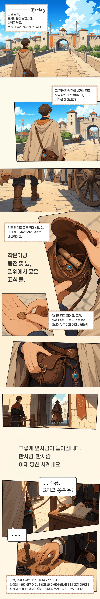
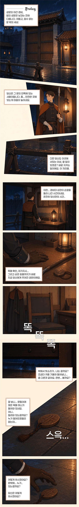
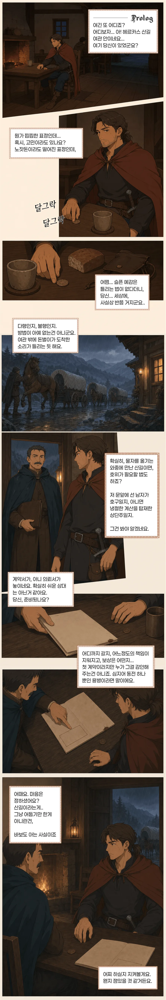

권역 선택
스무 권역이 스무 가지 삶을 품는다
같은 은화도 항구와 산길에서 값이 다르다. 왕도의 영웅담이 숲 경계에서는 경고로 남기도 한다. 이름을 고르면 수도의 풍경과 그 땅의 생활이 아래에 펼쳐진다.
비레스 알아보기
길을 나서기 전에 알아둘 것
성문에서는 이름과 보증인을 확인한다. 장터에서는 품삯과 물가가 오가고, 두 달이 뜨는 밤에는 길과 바다가 달라진다.
내 첫 장면
어떤 사람으로 시작할 것인가
직업에 따라 처음 만나는 장소와 사건이 달라진다. 마음에 가까운 삶을 고른 뒤 시작 장면을 펼쳐 볼 수 있다.
이야기가 시작되는 곳
긴 장면은 접어 두었다. 마음에 드는 시작을 펼치면, 그 상황에서 무엇을 보고 듣고 선택하게 되는지 먼저 볼 수 있다.
성문 앞에서 시작낯선 도시의 문 앞에서 이름과 용무를 묻는 장면이다.
도시로 들어가려는 길 끝에서 시작한다. 가진 것은 작은 가방과 동전 몇 닢, 길 위에서 닳은 표식들뿐이다. 앞으로 걸어가면 성문 서기와 마주하고, 돌아서면 아직 도시 밖의 길이 남아 있다.

비 오는 밤의 성문 근무문 안쪽 초소에서 경비와 의심, 작은 소리가 시작된다.
비가 내리는 밤, 당신은 성문 안쪽의 작은 근무처에 있다. 맡겨진 물건은 사소해 보이지만, 그 물건 하나가 누가 안으로 들어왔고 누가 밖에 남았는지를 가르는 단서가 된다.

산길 여관의 의뢰비 내리는 여관에서 낯선 계약과 책임을 건네받는다.
비가 길을 막고, 여관 안에서는 누군가가 당신을 알아본다. 계약서는 짧지만 질문은 길게 남는다. 어디까지 갈지, 누구의 책임을 질지, 보상보다 먼저 정해야 할 것이 생긴다.

장터와 납품 장부상인이나 서기로 시작해 봉인 끈과 환전 문제에 들어간다.
사람들은 물건보다 먼저 장부를 본다. 납품 도장이 맞는지, 은량과 곡표가 제대로 적혔는지, 누가 보증인인지에 따라 같은 짐도 전혀 다른 물건이 된다.
피난민 배급 줄이름패와 공동 창고, 귀향 논쟁에서 시작한다.
줄은 느리고, 사람들의 목소리는 낮다. 창고 문이 열리기 전부터 누구 이름이 먼저 불릴지, 누가 돌아갈 수 있고 누가 남아야 하는지를 두고 작은 다툼이 시작된다.
항만과 선착장의 새벽배표, 항만세, 선적 장부가 얽히는 출발이다.
새벽 항구는 이미 깨어 있다. 젖은 밧줄 냄새와 장부 넘기는 소리 사이에서, 당신은 어느 배에 오를지 혹은 어떤 짐을 막아야 할지 선택하게 된다.
풍경 보기
도시의 얼굴을 한 장씩
높은 성벽과 젖은 부두, 산길 숙소와 작은 어항을 한 장씩 크게 넘겨볼 수 있다. 길과 경계가 궁금해졌을 때만 맨 아래 자료관을 펼치면 된다.